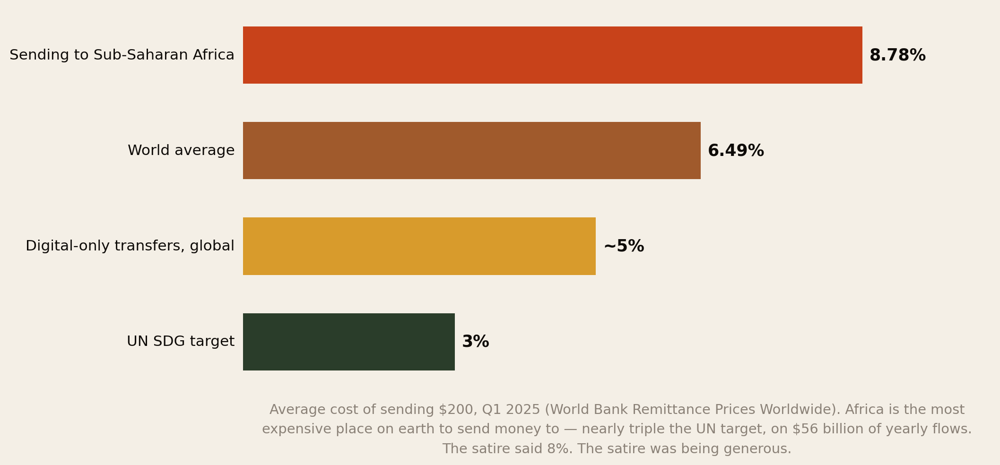
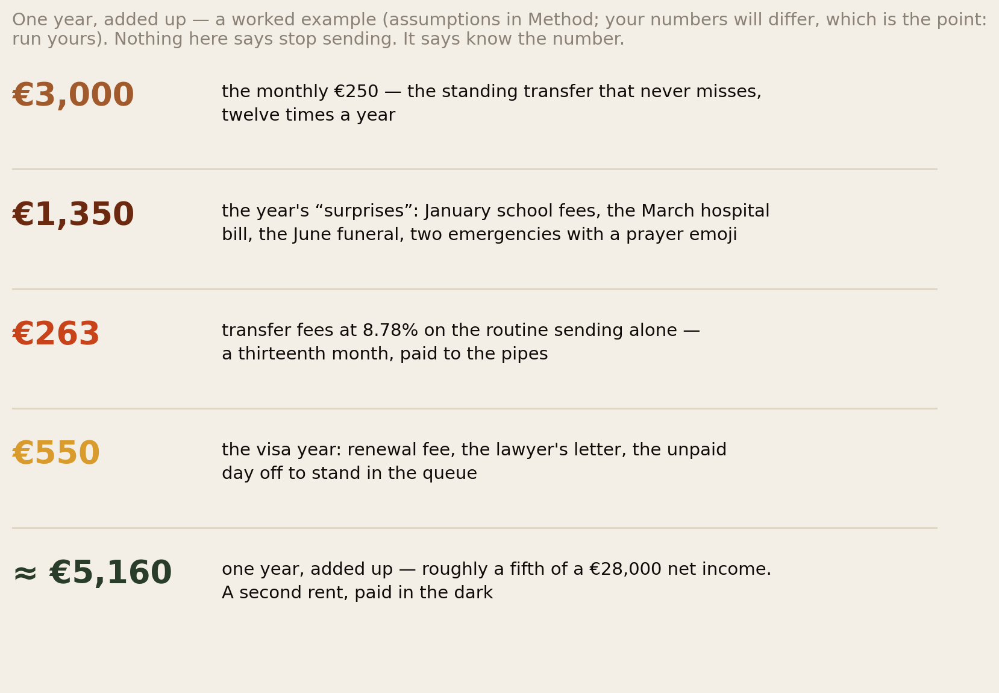
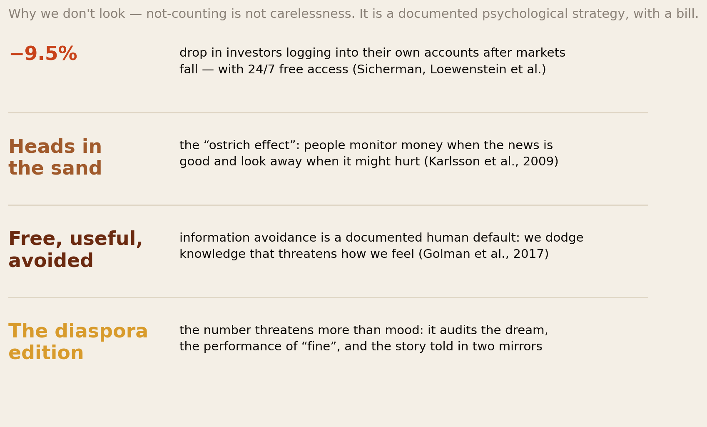
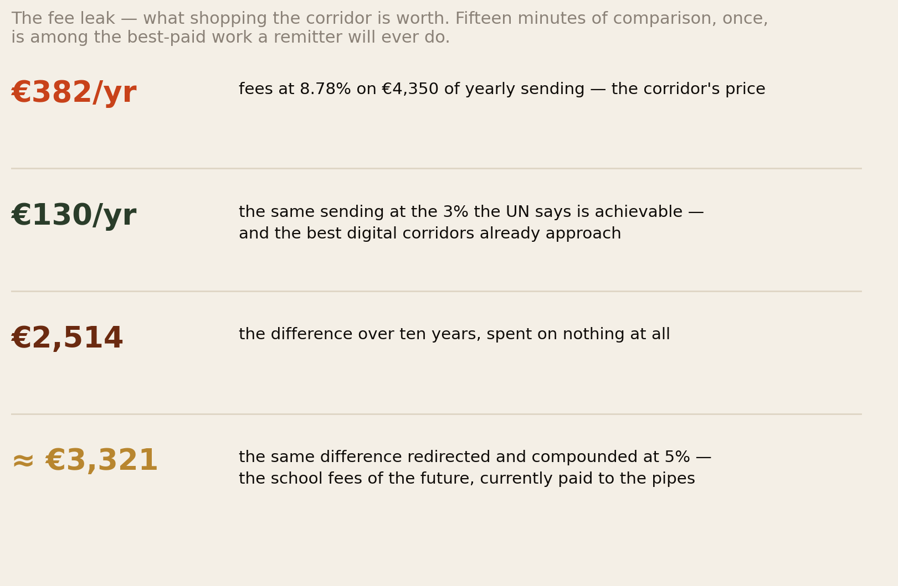
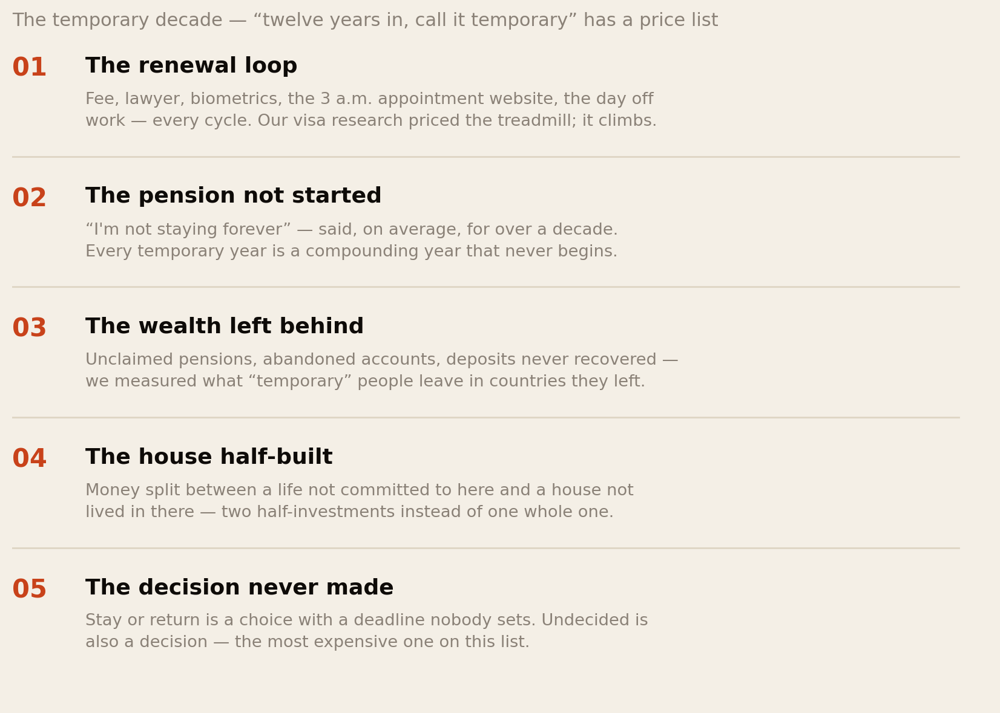
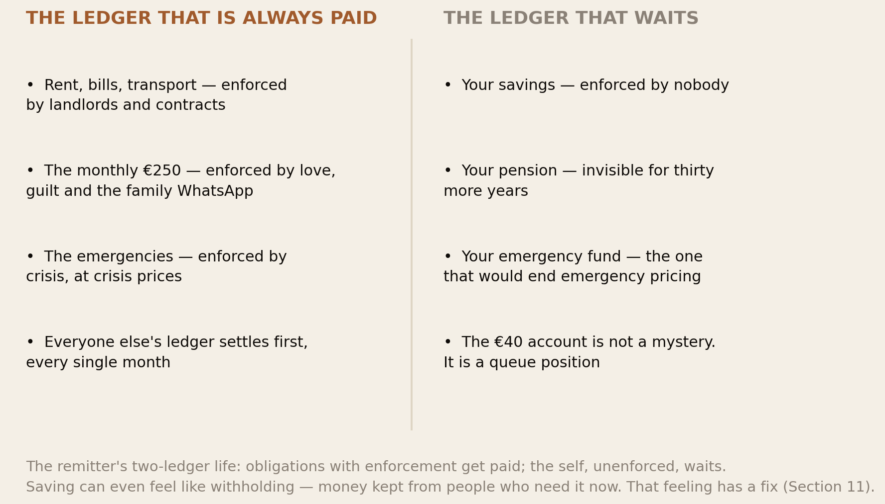
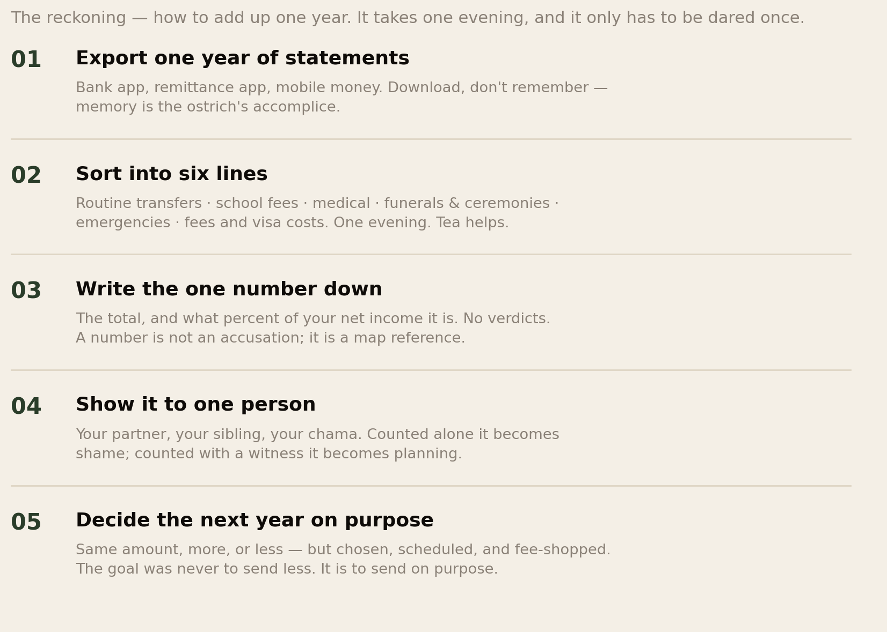
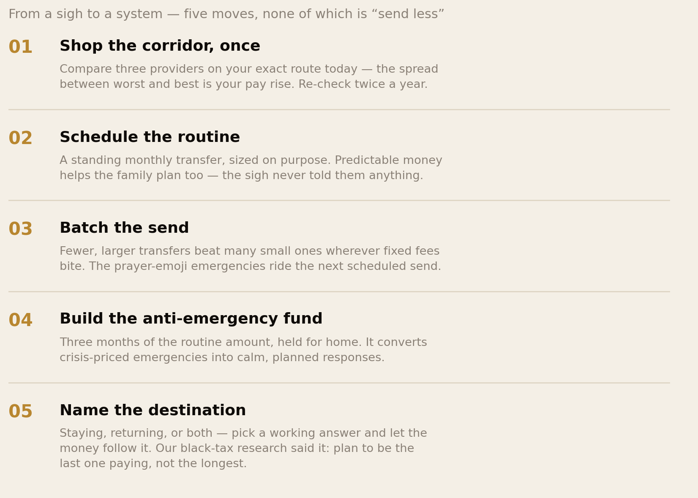

The Uncounted Year.
A letter went around this network: whatever you do, don’t add up what you sent home last year — you might do something reckless, like planning. This report dares the addition. The world’s most expensive money corridor at 8.78% a transfer, a worked one-year ledger that lands near a fifth of a net income, the documented psychology of refusing to look, the price list of the “temporary” decade, and the €40 savings account explained at last — plus the five moves that turn a sigh into a system, none of which is “send less”.
Section 01The Short Version
The letter in Section 02 asked one question and this report exists to answer it: have you ever dared to add up one year? Just one. We ran the number, checked the psychology of why nobody runs it, and priced what counting unlocks. The findings:
- The satire understates the facts. The letter joked about “8% on every transfer”. The measured figure is worse: sending money to Sub-Saharan Africa costs 8.78% on average — the most expensive corridor on earth, against a world average of 6.49% and a UN target of 3% — on $56 billion of yearly flows. The joke was documentary.
- One year, added up, is a second rent. Our worked example — the standing €250, the January school fees, the March hospital bill, the June funeral, two prayer-emoji emergencies, the fees, the visa year — lands at roughly €5,160: about a fifth of a €28,000 net income, paid in the dark. Your number will differ. That is the point: run yours.
- Not counting is not carelessness — it is a documented strategy. The ostrich effect: investors’ account logins fall 9.5% when markets drop; people systematically avoid free, useful information when looking would hurt. The diaspora runs the strongest version, because our number audits more than a budget: it audits the dream, and the performance of “fine” in two mirrors.
- The uncounted year has named line items — the fee leak (€250-a-year difference between the corridor’s price and the achievable one, €3,300 compounded over a decade), the temporary decade (the renewal loop, the pension never started, the wealth left behind), and the €40 savings account — which is not a mystery but a queue position: every enforced ledger settles before the unenforced self.
- Counting is not the reckless act. It is the loving one. The evening it takes to add up one year converts guilt into data, crisis-pricing into planning, and the sigh into a system — scheduled, fee-shopped, batched, buffered, and pointed at a destination. Nothing in this report says send less. It says send on purpose — and our black tax research already showed where on-purpose sending leads: to being the last one paying, not the longest.
The letter was right about one thing: counting leads to planning, planning leads to questions, and questions change everything. That was the warning. It is also the instruction manual.
Section 02The Letter
It arrived, as these things do, in the group chat — signed from your relative in Europe, with love 🧡. It deserves to be read whole:
“Living abroad is free money. Everyone back home knows this. So please, let’s keep the tradition alive. Don’t add up what you sent home last year. The school fees in January, the hospital bill in March, the funeral in June, the two ‘small emergencies’ that arrived with a prayer emoji attached. That number is nobody’s business — especially not yours. Keep paying 8% on every transfer. Africa is the most expensive place in the world to send money to, and somebody has to keep it that way. Renew the visa. Then renew it again. Pay the lawyer, book the appointment at 3am, take the day off work to stand in a queue. Twelve years in, call it ‘temporary’. Keep the savings account you opened in 2019. The one with €40 in it. It’s doing fine. And whatever happens, tell everyone at home you’re fine. Post the picture with the snow. A person living the dream has no reason to count what the dream costs. Because if we ever counted — the transfers, the fees, the renewals, the €40 — we might do something reckless. Like planning. Like asking questions. Like sending with a system instead of a sigh. Terrible idea. Forget I said anything.”
Satire is a diagnostic instrument: it only lands where it is true. So this report does the disobedient thing and treats every line of the letter as a claim to be fact-checked. The transfers (Section 03), the addition (04), the not-looking (05), the 8% (06), the “temporary” (07), the €40 (08), the snow picture (09) — and then, because the letter’s sarcastic ending is actually a to-do list, the planning, the questions, and the system (10–12).
Section 03The Most Expensive Place on Earth

Start where the letter started, because its most sarcastic line is its most factual. The World Bank prices every major remittance corridor quarterly, and the finding has held for years: Sub-Saharan Africa is the most expensive region on earth to send money to — 8.78% of the value of a $200 transfer in the latest reading, against a global average of 6.49%, a digital-transfer average near 5%, and the UN Sustainable Development Goal of 3%. On the roughly $56 billion the region received last year, the gap between what Africa pays and what the world pays is measured in billions — an invisible tax on love, collected at the counter.
Why so expensive? Thin competition on many corridors, banks “de-risking” out of African markets, exclusive agreements between operators and banks or post offices, currency controls, and the simple fact that captive customers who do not compare prices do not force prices down. Note that last clause, because it is the letter’s whole thesis in miniature: the corridor stays expensive partly because its users send with a sigh instead of a system. Our remittance-app comparison and live rate tracker exist for exactly this reason — and Section 06 prices what fifteen minutes of comparison is actually worth.
Section 04One Year, Added Up

Now the dare itself. We built the year the letter describes, with deliberately ordinary numbers — a €250 standing transfer, one school-fees January, one hospital March, one funeral June, two “small emergencies”, fees at the measured 8.78%, and one visa cycle with its lawyer and its unpaid queue day. The total: about €5,160 — roughly a fifth of a €28,000 net income. For comparison: that is a second rent in most European cities, a full pension contribution, or the deposit-building year that never seems possible. It is also, to say it clearly, a magnificent act of love repeated monthly — the black tax ledger showed what these flows measurably buy: school enrolment, healthcare, whole local economies.
The problem is not the number. The problem is that almost nobody who pays it knows it — and an unknown number cannot be planned, negotiated, protected, or completed. Known, the same €5,160 invites questions the sigh never allows: is the fee line necessary (no — Section 06)? Are the emergencies really emergencies, or annual events wearing costumes (school fees come every January; a fund beats a fright)? Is the sending sized to a plan — the “last one paying” trajectory our black-tax research mapped — or to whoever asked loudest most recently? Unknown, it is just weather. Known, it is a budget. That single conversion — weather into budget — is the entire report.
Section 05Why We Don’t Look

If counting takes one evening and unlocks all of the above, why has almost nobody done it? Because not-looking is not laziness — it is one of behavioural economics’ best-documented moves. Karlsson, Loewenstein and Seppi named it the ostrich effect: investors monitor their portfolios eagerly when markets rise and stop logging in when markets fall — logins drop 9.5% after declines, with free 24/7 access. The broader research programme, information avoidance, finds people dodging free, useful knowledge across every domain — medical tests, calorie counts, account balances — whenever the information might hurt to hold. Information does not just inform us; it makes us feel things. So we curate what we let ourselves know.
Now load the diaspora’s version, because our unopened statement carries more than a balance. Counting the year threatens the dream audit — if the total is huge and the savings are €40, what exactly did the migration buy? It threatens the performance — the “fine” broadcast in both mirrors survives partly because no one, including the broadcaster, has seen the books. It threatens relationships — a counted number might demand conversations with family that the sigh conveniently postpones (we have written about the questions we refuse to ask). And it threatens identity: the good son, the strong sister, the one who never needs to check because providing is who they are. Every one of these is a feeling about the number. None of them changes the number. The ostrich, the researchers note, does not actually escape anything by looking away — the market moves regardless. So does the year.
The statement is unopened for the same reason the envelope in our procrastination report stayed sealed: not to avoid the information, but to avoid the feeling. The fee, however, is charged on schedule, feelings and all.
Section 06The Fee Leak

Here is the letter’s “somebody has to keep it that way” line, taken seriously. On our worked year’s €4,350 of total sending, the corridor’s average price extracts about €382 in fees; the same money moved at the 3% the UN calls achievable — and the best digital corridors already approach — costs about €130. The difference, roughly €250 a year, is pure leak: money that reaches neither your family nor you. Over a decade that is €2,500 spent on nothing; redirected into anything earning 5%, it is €3,300 — a term of university fees, paid instead to the pipes, for the convenience of never comparing.
And comparison is the one lever entirely in the sender’s hand. Prices on the same corridor, the same day, routinely differ by several percentage points between the most expensive operator and the cheapest — that spread is why our app comparison found switching-worthy gaps on every African corridor we tested. Fifteen minutes of checking, twice a year, is worth more per hour than almost any overtime available to the people reading this. The letter is right that somebody has to keep Africa’s corridor the world’s most expensive. It does not have to be you.
Section 07The Temporary Decade

“Renew the visa. Then renew it again.” Our visa treadmill report priced the loop itself — the fees that climb faster than inflation, the lawyer letters, the 3 a.m. appointment websites, the unpaid queue days. But the renewals are the visible cost. The expensive part of “temporary” is what it does to every other financial decision: the pension never started because “I’m not staying forever” — a sentence our procrastination research called a solvent that dissolves every long-horizon task it touches; the savings never invested because they might be needed “for the move”; the pensions, deposits and accounts measurably abandoned in countries people finally left; the house at home half-built by money that was also half-committed here. Twelve temporary years produce neither a settled life abroad nor a completed one at home — two half-investments where one whole one would have compounded.
The uncounted year and the undecided decade are the same avoidance at two timescales. The fix is also the same: the decision does not need to be final; it needs to be working. “We are here for at least five more years” unlocks the pension. “We return in 2030” unlocks the completed house. Either answer beats the one the letter recommends — which is, cheerfully, neither.
Section 08The €40 Account

The letter’s cruellest joke — the savings account from 2019 with €40 in it — deserves the gentlest analysis, because the €40 is not evidence of indiscipline. Look at the two ledgers. Everything on the first — rent, bills, the monthly €250, the emergencies — has an enforcement mechanism: a landlord, a contract, a mother, a crisis. Everything on the second — your savings, your pension, your buffer — is enforced by nobody. In a month where the two ledgers compete (which is every month), the enforced one wins, and the self is paid last from what remains, which is €40. Behavioural economics has known this forever: unenforced intentions lose to enforced obligations, which is why every saving system that works — the payroll pension, the standing order, the chama — works by adding enforcement, not motivation.
There is a second, quieter blocker: for a remitter, saving can feel like withholding — euros sitting in your account while someone at home needs them now reads, in the communal ledger, like hoarding. The reframe that survives contact with the culture is the one our black-tax report built: the emergency fund is for the family — it is what answers the 2 a.m. call without a payday loan; the pension is for the family — it is the guarantee you will not become the next generation’s black tax. Paying yourself is not defection from the system. It is the exit ramp the whole system needs one person per family to build.
Section 09The Performance of Fine
“Tell everyone at home you’re fine. Post the picture with the snow.” The letter’s final instruction is the one this library has mapped most thoroughly, so we can be brief and precise. The performance of fine is maintained by three engines working together: the myth of abroad (84% of migrants overestimated the wages waiting for them; your snow picture is the next cohort’s evidence), the audit (admitting the dream costs more than it pays invites the “what will people say” machinery), and the givers’ paradox (the provider role forbids the provider from ever presenting a need). The uncounted year is this performance’s accounting department: the books must stay closed because the show must go on.
Here is what the counting actually threatens — and why that threat is the best argument for it. A counted year makes the performance negotiable. It gives you the number that turns “I can’t” (disbelieved, resented) into “here is what this year already carried” (a fact, discussable). Families, our remittance research keeps finding, mostly do not know what the sender’s life costs — the information asymmetry runs both directions, and the sigh maintains it in both. The snow picture told them nothing. The number, shared with even one trusted person at home, is the beginning of the honest conversation every other report in this series has been circling.
Section 10The Reckoning, Step by Step

The letter asked whether you have ever dared to add up one year. Here is the dare, operationalised. Export, don’t remember: one year of statements from the bank app, the remittance apps, the mobile-money history — memory is the ostrich’s accomplice, and it will round everything down. Sort into six lines: routine transfers; school fees; medical; funerals and ceremonies; emergencies; fees-and-visa. Write the one number down, and beside it, its share of your net income — no verdicts attached; a number is not an accusation, it is a map reference. Show it to one person — partner, sibling, chama: counted alone the number curdles into shame; counted with a witness it becomes planning (this is the communal-witness machinery this series keeps returning to, pointed at a spreadsheet). And decide the next year on purpose: the same amount, more, or less — but chosen, scheduled, and fee-shopped rather than extracted sigh by sigh.
Expect the evening to be emotional. The number is usually bigger than feared, and the first reaction is often grief — for what else the money might have done — followed, in nearly every account members have shared with us, by something unexpected: pride. Almost nobody knows they carried that much. You have been running a small development agency out of a salary. Now run it with books.
Section 11From a Sigh to a System

With the number known, the system almost writes itself — five moves, each attacking one line of the counted year. Shop the corridor (Section 06’s €250-a-year lever; our comparison and rate tracker do the legwork). Schedule the routine: a standing transfer, sized on purpose — predictable money is also a gift to the family, who can finally plan instead of petition; the sigh never told them anything. Batch the send: wherever fixed fees bite, fewer larger transfers beat many small ones, and non-urgent requests ride the next scheduled send — a one-sentence policy (“I send on the 28th”) that converts you from an ATM into an institution. Build the anti-emergency fund: three months of the routine amount, held for home, converts crisis-priced fright into calm response — most “emergencies”, counted, turn out to be Januaries. And name the destination: staying, returning, or genuinely both — a working answer that lets the pension start, the house finish, and the “temporary” decade end on purpose. None of this reduces love. It removes the leak, the panic, and the dark — and our black-tax arithmetic showed where it ends: the last one paying, not the longest.
Section 12The African Advantage
The letter’s deepest irony is one it never states: the culture it teases is one of the best accounting cultures on earth — communally. The harambee keeps a written list of every contributor and every shilling, read aloud. The chama’s books balance to the cent, monthly, for decades — that discipline is exactly what our household-saving research found powering savings rates that shame formal banking. The wedding committee publishes its budget. The burial society audits itself. Nobody in our communities thinks counting shared money is unloving — counting is how the community protects what it loves. The uncounted year is the strange exception: the only ledger our culture refuses to keep is the one where the self is the beneficiary.
Which means the fix is not imported financial literacy — the literacy is indigenous and world-class. The fix is jurisdiction: move your own year into the accounting tradition you already trust. Treat yourself as a one-person chama: monthly meeting (ten minutes, phone open), recorded contributions (the transfers), audited books (the six lines), and an agenda item the group version always has — what are we building? Some members have literally done this inside their chamas: an annual round where each person shares their counted year. The room, one wrote to us, went from jokes to silence to the most useful money conversation of their lives. That is the letter’s question, answered communally — the only way this culture has ever answered anything.
Section 13The Uncomfortable Part
First: the sigh has beneficiaries, and one of them is you. Opacity is not only imposed by the family’s expectations; it is also chosen, because the uncounted arrangement spares the sender the hardest conversations — the boundary never drawn, the “no” never practised, the plan never proposed. As long as nobody counts, nobody has to negotiate. Counting ends your innocence too: once you know the number, continuing exactly as before becomes a decision rather than a drift — and some readers will close this report rather than accept that. The letter, with love, was betting on it.
Second: the family cannot plan around a fog either. The sigh reads as noble — give without counting — but from the receiving side, unpredictable money is hard to build on: nobody at home can commit to a school, a treatment plan, or a business on transfers that arrive by mood. The scheduled, counted, honest version is not stingier. It is the first version the family can actually use as a foundation instead of as weather. Generosity without information is, too often, generosity without effect — our support-versus-ownership research measured that gap.
Third: do not let the spreadsheet become the new performance. There is a failure mode on the far side of counting — the convert who audits every €10, renegotiates grandmother’s airtime, and confuses optimisation with wisdom. The count exists to serve the love, not to replace it: some line items are sacred (the funeral contribution is not a leak; it is citizenship), some inefficiencies are relationships, and the correct amount of financial slack in an African family is never zero. The target the whole series has been drawing is the same here as everywhere: not the sigh, not the audit — the system with a heart. Count the year. Keep the love. Send on purpose.
Section 14Method & Limits
This report combines World Bank remittance pricing, behavioural-economics research on information avoidance, and this library’s own prior arithmetic, as at 7 September 2026.
- This report began as a satirical letter shared inside this network; its structure follows the letter’s claims deliberately, and each claim was checked against data rather than assumed.
- The 8.78% figure is the World Bank Remittance Prices Worldwide average cost of sending $200 to Sub-Saharan Africa (Q1 2025); the global average (6.49%), digital average (~5%) and SDG target (3%) are from the same programme and the UN framework. Costs vary enormously by corridor and operator — some African corridors are far cheaper, some worse; the regional average is the honest headline, not a quote for your route. The $56 billion is the World Bank’s 2024 SSA inflow estimate; recorded flows undercount informal channels.
- The worked year (Fig 2) is an illustration, not a survey finding. Assumptions: €250/month routine sending; €1,350 of episodic support; fees applied at the regional average to routine transfers only (episodic transfers also incur fees — our total is therefore conservative); one visa cycle at typical European renewal + advice costs; a €28,000 net income. No dataset measures the full annual outflow of individual African senders — that absence, as with the lifetime figure in our black-tax report, is itself a finding. Run your own numbers; the report exists so that you do.
- The fee-leak decade (Fig 4) applies 8.78% versus 3% to €4,350 of yearly sending, with the difference compounded at an illustrative 5% annual return. It is arithmetic, not a promise of investment performance.
- The ostrich effect and information avoidance are established findings (Karlsson, Loewenstein & Seppi, 2009; Sicherman et al.’s login data; Golman, Hagmann & Loewenstein’s 2017 review) from investor and general populations — no study has measured remittance-statement avoidance specifically. The diaspora application in Sections 05, 08 and 09 is our synthesis, connecting those mechanisms to the shame, envy and help-seeking machinery documented earlier in this series, and is labelled as argument.
- Nothing here is financial advice, and the report’s recommendations are deliberately provider-agnostic: compare corridors yourself, on your route, on the day. Where personal debt, tax or investment decisions follow from your counted year, a regulated adviser is the right next ask — and asking is the skill.
Principal sources: World Bank Remittance Prices Worldwide and the Migration Data Portal remittance overview; Karlsson, Loewenstein & Seppi (2009) on the ostrich effect; Sicherman, Loewenstein, Seppi & Utkus on financial attention; Golman, Hagmann & Loewenstein (2017) on information avoidance; and this library’s own prior measurement in the black tax, visa treadmill, wealth-left-abroad, remittance-app and household-saving reports.
Companion reports: The Black Tax Ledger, The Visa Treadmill, The Wealth We Leave Behind, Why We Don’t Ask and The Envy Economy.
The diaspora helps the diaspora.
Africa Global Forum is a peer network for Africans abroad — help each other, sit together, and bounce ideas. This research is part of an open library, free to read and share.